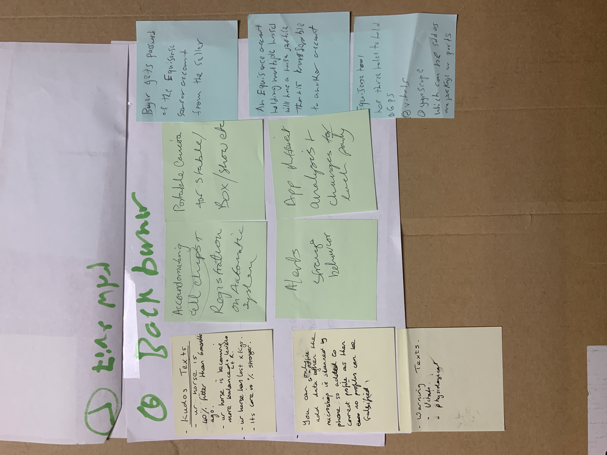
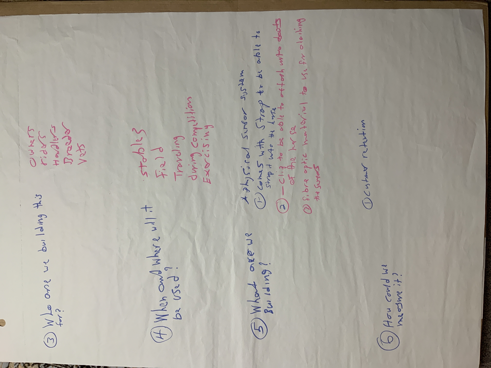
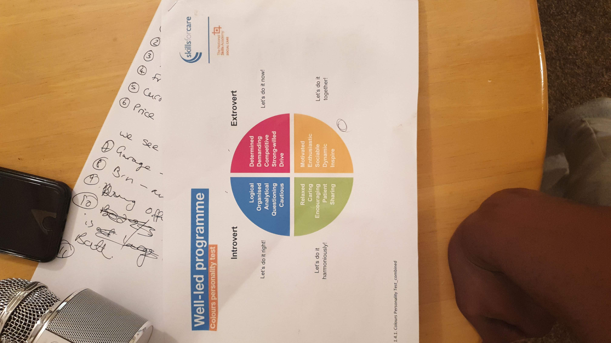

N9
The problem
A show-jump scientist wanted to explore a “Fitbit for horses.” She had an interested investor, but he still had doubts. I was brought in for research and design. After interviewing both stakeholders, I recommended a one-week design sprint: compress months of discovery into five focused days, answer the business questions, produce a prototype, test it with customers, and decide whether—and how—to move forward.
Planning & strategy
I planned a one-week design sprint and ran it in the countryside near the show jumper’s barn so we had direct access to the environment, horses, and context we needed for the workshop.

Pre-sprint
Before we met, I tailored the sprint activities for a team of three. The founder did not yet have a business plan, and the goal was discovery—so I removed activities that would not help. I briefed everyone on how the week would run, our roles, and what to expect, and sent a short form so stakeholders could gather research materials in advance.
Prep included:
- Five users available for end-of-week testing
- A list of at least three competitors
- At least three interviews each (I shared a question guide and ran interviews myself as well)

Day 1: Gathering existing knowledge
When we met, I set up the workshop space so materials were organised and easy to reach.
We opened Day 1 with a shared download: everyone talked through what they already knew. After about twenty minutes, we practised an elevator pitch for the product. Each person wrote a version, pitched it, and we refined until it was sharp enough for the week. I asked stakeholders to recite it whenever they could, and we restarted each remaining day with the pitch so it stuck.

Long- and short-term goals
We mapped long- and short-term goals for the project. I prompted with questions that pushed beyond the obvious—plans, constraints, and how the founders would work together. Each person wrote goals; we compared notes, agreed on the strongest set, and merged them into one working note for the rest of the sprint. That note later helped when they built a business plan.

Problem statement
We listed every problem we could see around the horse, rider, and environment—including transport and competition scenarios. Then we narrowed to the primary problem we were solving and checked whether our emerging solution still addressed it. We agreed which problems were in scope for the sprint and which to park for later.


Backburner board
We explored how a product might be made—where, when, by whom, and how it might look—while comparing competitor approaches. We also discussed horse sensitivity to attachments and how to work around it. Ideas we liked but could not commit to yet went on sticky notes on a backburner board.


Open card sorting
On a product exercise board, we used stickies to categorise and prioritise ideas into who, what, when, and where—an early look at user flow. That surfaced assumptions to test later and forced a sharper view of the user. When the problem space still felt too broad, we returned to the problem statement and cut the list down to five key problems.

Needs, wants, and desires
I guided the stakeholders through defining how the product would solve a real user problem—needs, wants, and desires—and the situations that trigger demand. We used a “five whys and a how” template so answers stayed structured and recorded.

Who, what, when, and where?
We closed knowledge gaps by sharing what each person knew, reviewing pre-sprint research, and analysing competitor products. A who / what / where / when workshop clarified use cases. One hard constraint stood out: horses often reject attachments and can injure themselves trying to remove them. Form factor became critical.
We checked ideas with the founder’s equine community. The practical options narrowed to a device light enough to plait into the mane, a ride-only sensor as part of the saddle, or a horseshoe concept whose viability was still arguable.


Critical path
We took turns describing a day in a user’s life and the problems along the way, then wrote those steps as a shared critical path.
Notes
This was my first design sprint. I was nervous at the start—I stammered, made mistakes, and got confused when my notes fell out of order.
Lessons learnt
Attend more UX workshops to sharpen facilitation and confidence. Keep a simple checklist to mark progress so notes and activities stay organised under pressure.

Day 2: Exploring possible scenarios
On Day 2 I reviewed the schedule, we practised the elevator pitch again, and then opened the diverge work for the day.

Mind mapping
We revisited the previous day’s key ideas, problems, and solutions, then mind-mapped under a timer. Everyone explored problem and solution possibilities on paper, exchanged notes, and probed for clarity—why a solution was chosen, what the technology would look like, which features mattered, and how feasible it was. Encouraging tough questions led to longer discussion and even argument; by the end we understood each other’s thinking and had improved, dropped, or strengthened sections of the maps.

Team building
For a founding team, it matters to see how people work under pressure—serious, playful, frustrated, or energised. Short team-building exercises help bond the group, unlock contribution, and give new founders a realistic sense of whether they can build a business together.
I keep two ingredients in the mix: music, and a short cognitive activity that is fun enough to reset the room without losing the day.

Crazy 8s
We pushed ideas further with Crazy 8s. Using a timer on my iPad (Bit Timer), we sketched in short bursts and generated up to five different directions in about fifteen minutes. We reviewed each other’s sketches, asked questions, then passed sheets around and marked the concepts that felt feasible and most likely to work for customers.


Storyboard
Next I guided a storyboard session, using the mind maps and Crazy 8s as prompts. After each person finished, we swapped boards and discussed which problems each story solved, how approaches differed, how the technology would sit on the horse, and how to avoid discomfort. Unique insights stretched the discussion past the timebox, so I moved us to the next activity to force a clearer consensus.

Silent critique
Everyone had five minutes to write feedback on another person’s storyboard, then pass it back so the owner could prepare a response. Quiet critique let us share honest views on feasibility and viability before open debate.
Group critique
We opened the silent notes into a group critique—suggestions, improvements, and pressure-testing each idea. Then we focused on one direction that felt actionable, feasible, and viable. I re-sketched that concept and we used stickies to re-evaluate and attach features.
Notes
Confidence grew here. We were more comfortable with each other, and the team worked more in sync on the problem.
Lessons learnt
Set up audio or video to document the process—I kept missing crucial moments and lost material. Also listen more and stay calmer in debate; reviewing short clips later, I could see where I got too comfortable, argued too hard, or grew impatient.

Day 3: Choosing the right path
We opened with five-minute elevator pitches, then focused the day on collapsing the previous possibilities into a single solution direction. By the end of that pass, each person held one idea.

Re-evaluating conflict
We returned to the storyboards, surfaced conflicting ideas, and pressure-tested them against implementation reality. I actively discouraged over-attachment to any one concept so technical and equine constraints stayed in view.


Planning to test assumptions
We gathered assumptions from earlier activities and planned how to test them—including whether we needed a barn visit or a full-size horse model. We settled on printing a life-size horse image to demonstrate and challenge past assumptions, then reused that approach with target users for the end product.
Reviewing the backburner board
We cleared ideas we would never use and re-evaluated the rest, aiming to choose one direction from three. Two strong options remained: monitoring racehorses, or monitoring a horse around the clock. I pushed the decision criteria—biggest problem solved, easiest to implement, fastest to produce. We agreed to pursue racehorse monitoring.

Second storyboard
With the direction set, we ran a second storyboard focused on a racehorse monitoring system the horse could wear without discomfort. We discussed while I sketched. By the end of the day we had a clear product concept and closed the session.


Day 4: Prototype
After a five-minute pitch practice, I handed out sharpies, scissors, and paper. Each of us had five minutes to build a paper prototype around the racehorse monitoring system. We then took turns explaining the idea, how to implement it, and where it could be produced.
After debate, we aligned on one concept based on technology and equine requirements. I also designed a low-fidelity companion app to sit with the hardware.

Day 5: Testing the end product
We defined use cases for the prototype and recruited testers through a Facebook group. Testing ran over video call: we demonstrated the hardware and software concepts and collected feedback.
The concept that emerged is a racehorse gait monitor. Using AI, it records behavioural patterns over time, learns walking and gait signatures, and combines body-temperature data to help judge whether a horse is fit to race. GPS supports locating the horse.
The hardware concept pairs gyroscope-based movement sensing with head/body temperature sensors and ECG for heartbeat monitoring.
Stakeholders agreed they had enough validated insight to write a business plan and decide how to start the project.
Deliverables
Sprint documentation Full record of the week’s activities, decisions, sketches, and prototypes so the founders could continue without losing context.
UX expert feedback Written analysis with recommendations on next steps for research, product, and business planning.
Permission request Request for permission to use project assets and media in this portfolio.